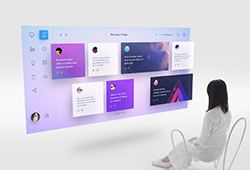

Static 静·享 一家人的享乐中心
每一套设计我们都细心研究，集体讨论。从美观度到延展性，从体验度到适用性。技术哥哥前端姐姐提出的中肯建议，设计师们都虚心接受，悉心改良。
Static 静·享 一家人的享乐中心
每一套设计我们都细心研究，集体讨论。从美观度到延展性，从体验度到适用性。技术哥哥前端姐姐提出的中肯建议，设计师们都虚心接受，悉心改良。
 26
26 58
58 46
46路边野餐 | Kaili Blues
在曼哈顿一栋热闹非凡的公寓楼中，当那些两条腿走路的人类出门上班或上学之后，一天才算真正开始。这时，五花八门、品种各异的宠物们开始了自己朝九晚五的生活：结伙闲逛，分享主人的糗事，选拔可爱造型以博取美味零食，把《动物星球》当成真人秀来看。 公寓楼的领头狗麦克（路易·C·K Louis C.K. 配音）是一只机智灵敏的梗犬，他自认为是主人凯蒂（艾丽·坎伯尔 Ellie Kemper 配音）生活的中心，结果当凯蒂把杜老大（艾瑞克·斯通斯崔特 Eric Stonestreet 配音）这只邋遢肮脏、毫无社交技巧... ... 领回家之后，他发现自己养尊处优的生活急转直下。当这两只三观不合的宠物狗迷失纽约的穷街陋巷之时，他们不得不放下分歧，齐心协力对抗一只外表毛茸茸却内心狡猾的兔子小白（凯文·哈特 Kevin Hart 配音）。小白召集了一群遭弃的宠物，组成了一支联盟，试...
265846